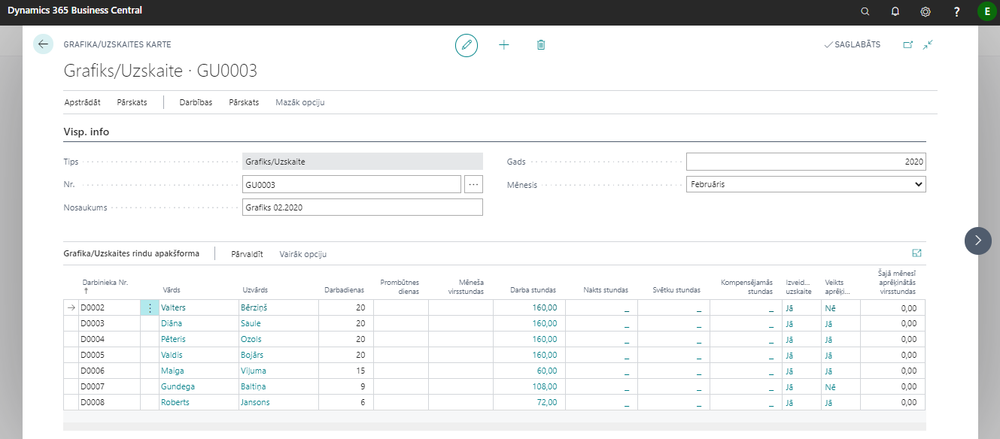
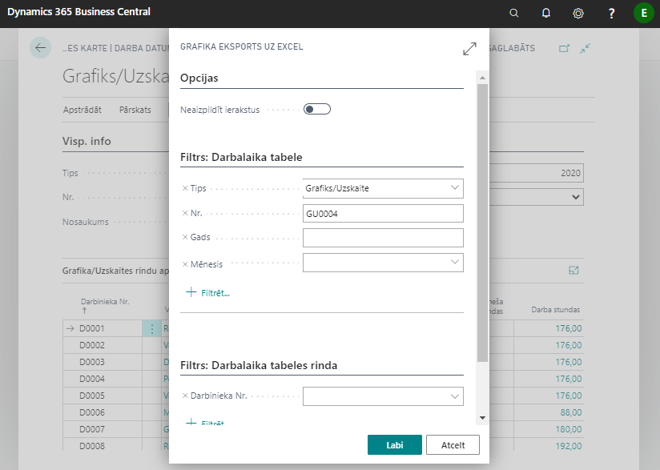
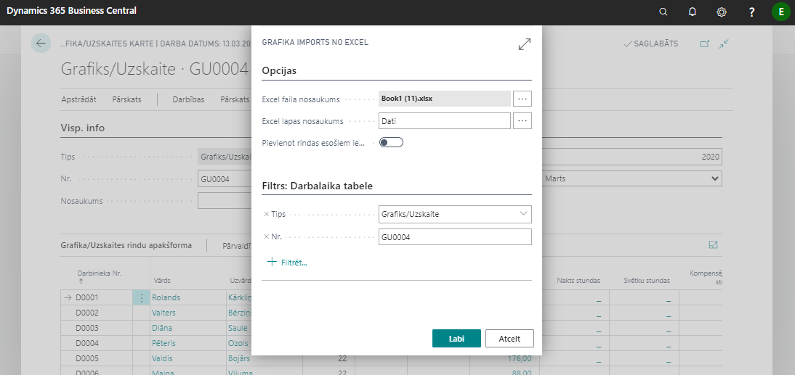

Grafiks
Grafiks – darbinieku plānotais darba laiks. Tas sistēmā ir nepieciešams, lai veiktu pareizus aprēķinus slimības lapas A gadījumā – nosakot, kuras dienas darbiniekam ir jāapmaksā, pamatojoties uz to, kāds bija viņa plānotais darba laiks (skat. sadaļu Prombūtnes reģistrēšana), kā arī nostrādātā laika proporcijas aprēķinam, ja darbinieks nostrādājis nepilnu mēnesi. Grafiks jāģenerē jau laicīgi (piem., mēneša sākumā), lai būtu iespējams korekti ievadīt Slimības lapas A.

Sākot darbu, jābūt uzstādītām Grafiku numuru sērijām: Lomu Centrs - Administrēšana - Algu uzstādījumi - cilne Numerācija - Grafiku numuri.
Grafiks tiek izveidots, ģenerējot ierakstus no darbiniekam piesaistītā darba laika kalendāra.
Vispārīgā informācija
Jaunu grafiku veido: Lomu Centrs - Grafiki – poga Jauns. Numurs tiks piešķirts automātiski. Tālāk jāizvēlas Gads un Mēnesis, par kuru tiks veidots darba laika grafiks (automātiski tiek aizpildīts ar tekošais gadu un mēnesi).
Darbinieku saraksta izveidošana
Grafiku (darbinieku sarakstu) veido ar Apstrādāt - Izveidot rindas. Grafikā tiek ieģenerēti visi tie darbinieki, kas atbilst iepriekš norādītajiem filtriem ar stundām no kalendāra.
Grafika aizpildīšana MS Excel
Grafiku var eksportēt (nosūtīt) uz Excel failu un ieimportēt (ievilkt) atpakaļ uzskaites formā. Lai to darītu, Grafikā ir jābūt ieģenerētam darbinieku sarakstam (saraksts var būt un var arī nebūt aizpildīts ar datiem no kalendāra). Grafika eksportēšana notiek, izmantojot funkciju Apstrādāt - Eksports uz Excel.

Atskaites parametri: Neaizpildīt ierakstus – ja ķeksītis ielikts, tad grafikā netiks aizpildītas stundas. Tukšas rindas - atskaitē paredzētas tukšas rindas darbiniekiem, kuri pieņemti tekošā mēneša laikā;
Kad Grafika eksports uz Excel ir veiksmīgi pabeigts, tad jaunizveidotajā failā ir iespējams iekopēt datus no citiem uzskaites failiem vai aizpildīt datus ar roku. Importējot šo Grafiku atpakaļ programmā, visa ievadītā informācija tiks saglabāta. Jāievēro, ka rediģējami ir lauki, kuros paredzēts ievadīt plānotās stundas. Grafika importēšanai atpakaļ programmā tiek izmantota funkcija Apstrādāt - Imports no Excel. Jāievēro, ka šī funkcija jāveic tajā Grafikā, kurš pirms tam tika eksportēts uz Excel. Sistēmā tiks ieimportēts Grafiks ar visiem veiktajiem ierakstiem – plānoto darba grafiku.

Lai sistēma varētu importēt grafiku, jānorāda excel faila nosaukums (ceļš līdz failam) un excel lapas nosaukums.
Grafika pārģenerēšana pēc pārskata mēneša
Beidzoties pārskata mēnesim, Grafikā jāieģenerē arī tie darbinieki, kas pieņemti mēneša laikā. To dara, izmantojot funkciju Apstrādāt - Izveidot rindas. Tā rezultātā iepriekš izveidotajam sarakstam tiks pievienoti trūkstošie darbinieki.